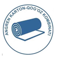

Тест по ПТЭ и ПТБ (IV группа)AKBK
Язык:
Русский
O'zbekcha
Ф.И.О.:
-- Выберите Ф.И.О. --
Суланов Фуркат Абдужаббарович
Акбархонов Азизхон Козимхон угли
Исматов Рахимберди Кушбаевич
Ладейщиков Александр Викторович
Мадираимов Абдурахмон Муфозил угли
Минбаев Дилшод Юлдашбаевич
Мирисманов Жасур Абдилахакович
Сатторов Дониёр Бахтиёр угли
Ярматов Ильхом Гуломжонович
Закиров Эльдор Шакирджанович
Тагаев Шомурод Валижонович
Нурматов Шахзод Хасан угли
Пароль:
Начать тест
Оставшееся время:
15:00
Далее